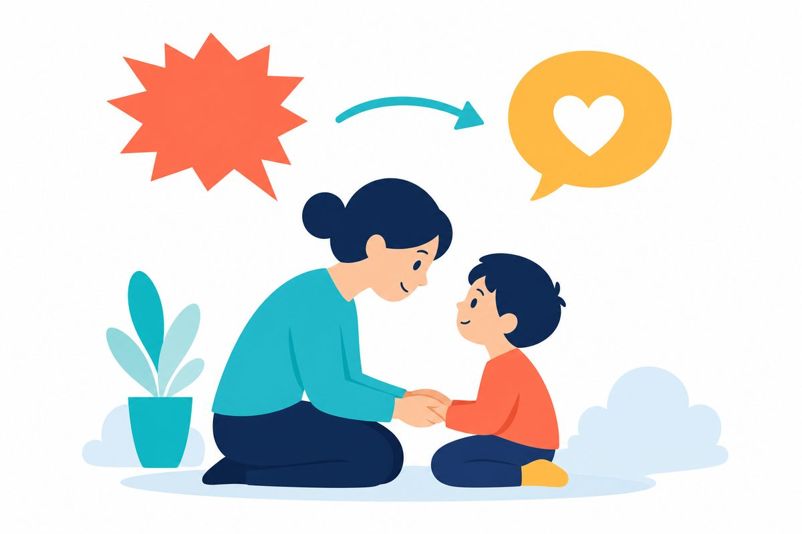
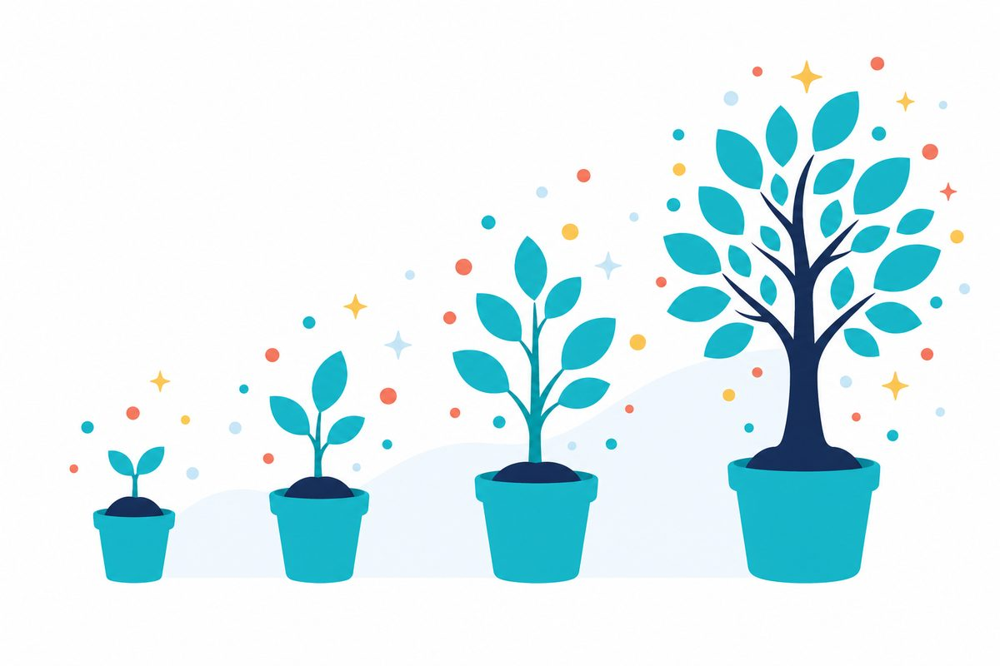
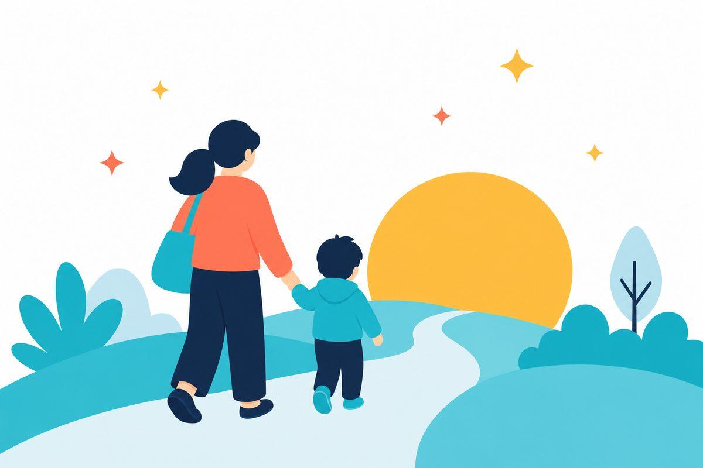

発達グレーゾーンの子と暮らす保護者のための発育AIコーチ WAKU-LOG。困りごとをスマホで1行入れると、その場で“責めない声かけ案”が返ってきます。どんなものかは、説明より体験がいちばん ―― 画面のボタンを押してみてください。
よくある困りごとから、えらんでみてください
※これは触って試せるデモです。実際のアプリでは自由に入力でき、提案はお子さんの記録に合わせて変わります。
使い方は、いま触っていただいた3ステップだけ。
「公園から帰れない」など、いま困っていることをそのまま。専門用語はいりません。
共感のひと言と、「こう言ってみては？」が数秒で。深夜でも、外出先でも。
「効いた／違った」を押すだけ。これが積み重なるほど、提案がその子に合っていきます。
叱りたいわけじゃない。動いてほしいだけ。WAKU-LOGは、同じ気持ちを「その子に届く言い方」に変換します。
なぜ？ 急な「終わり」が不安な子に、先に見通しをつくってあげる声かけです。
なぜ？ 手順を頭の中で組み立てにくい子には、「見える化」が言葉より届きます。
なぜ？ 泣くのは「できない自分が怖い」のサインかも。量を小さくして寄りそいます。
声かけに「絶対の正解」はありません。WAKU-LOGは、その子の特性傾向と記録に合わせて“その子に届きやすい候補”を返します。
同じ言葉でも、特性によって届き方はちがいます。必要なのは、しつけを強めることではなく、その子に合った伝え方のレパートリーでした。そして、同じ廊下で悩んでいる家庭は、あなただけではありません。
通常学級で、学習や行動に特性上の著しい困難を抱える児童生徒の割合。35人クラスに約3人です。
そのうち、医師の診断を受けていない子の割合。手帳がなく、公的支援につながりにくい「グレーゾーン」です。
出典：文部科学省「通常の学級に在籍する特別な教育的支援を必要とする児童生徒に関する調査」(2022)
WAKU-LOGの提案は、ABA（応用行動分析）などの学術的な知見と、発達支援の専門家の経験則をもとに設計しています。

WAKU-LOGは、相談と「効いた／違った」の記録を覚えていきます。はじめは“傾向の近い子向け”の一般的な提案から、だんだん“わが子専用”の提案へ。たとえば ――
朝の流れを絵や写真で「見える化」すると、見通しが立ちやすくなるお子さんが多いですよ。まずは起きてから家を出るまでの順番を、一枚の表にしてみましょうか。
傾向の近い子に効きやすい、ていねいだけど一般的な提案。
公園のとき、タイマーの“先に予告”が効きましたね。朝も同じ作戦でいきましょう。①起きたら5分タイマー ②絵カードは3枚だけ（シャツ→ズボン→くつした）。多いと止まっちゃうタイプでしたから。
記録が積み重なった、この子専用の提案。効いたコツが、別の悩みにも応用されます。
30問ほどのかんたんチェックで、その子の傾向を初期プロフィールに。
はじめての相談。「公園から帰れない」にタイマー予告を提案。
「効いた！」をタップ。“この子に効くコツ”として記憶されます。
別の悩み「着替えをしない」にも、先週の成功パターンを応用。
新しい悩みが来ても、もう“この子専用の解き方”を持っています。
毎日のひと相談が、わが子だけの「取扱説明書」になっていく。

本当は、かかりつけの先生にこまめに相談できたらいい。WAKU-LOGの通知は、その“面談”をアプリの中につくります。急かさず、ちょうどいいタイミングで。
先日の「公園から帰れない」の件、その後どうでしたか？
★ いちばん大切な「振り返り」おはようございます。今朝のお子さんの様子は、どうですか？
今週の「良かったこと」がまとまりました。見てみませんか？
「先日の件、試してみましたか？」
この一言が、面談の代わりになる。
「効いた」を押せば、つぎの提案がもっとその子に合っていく。「違った」なら、別のアプローチをすぐ提案。「また起きた」なら、その場で相談を再開できます。
このやりとりの積み重ねが、WAKU-LOGを“わが子の理解者”に育てます。通知はあなたを急かすためではなく、ひとりで抱えこませないためにあります。
わが子のことだから、安心がなにより大事。WAKU-LOGが約束することを、正直にお伝えします。
特性に「病名」をつけるためのものではありません。目的は、今日の声かけをほんの少しラクにすることです。
先行βは無料です。本名も診断名も入力は必須ではありません。合わなければ、いつでもやめられます。
相談や「効いた」の記録は大切に保管し、その子への提案の精度を高めるためだけに使います。
困りごとの奥にある得意を、いっしょに探す道具です。落ち着きのなさは行動力、こだわりは探求心かもしれません。
はい。むしろWAKU-LOGは、診断の有無をおうかがいしません。「特性なのか、性格なのか、迷っている」――その段階の方にこそ、使っていただきたいサービスです。
正直にお伝えすると、体験できるのは「相談機能」ひとつだけです。困りごとを入れると責めない声かけ案が返り、結果を記録できます。ほかの機能は、参加してくださったみなさんの声を聞きながら順番に育てていきます。
先行βは無料です。途中で料金が発生することはありません。
3〜12歳ごろのお子さんと暮らす保護者の方を想定しています。年齢の範囲外でも、まずはお気軽にご相談ください。
本名・診断名の入力は不要です。いただいた内容はサービス改善とご案内の目的にのみ使い、第三者に提供することはありません。ご希望があれば、いつでも削除できます。

2026.6.14、WAKU-LOGの先行βが始まります。体験できるのは「責めない声かけ」が返る相談機能ひとつ。最初の保護者のひとりとして、いっしょに育ててください。